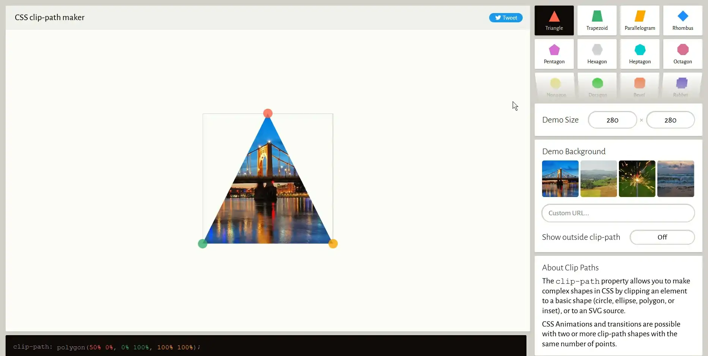
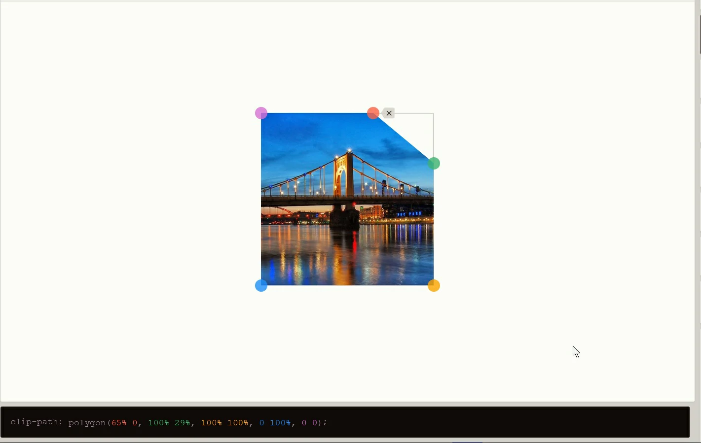

Tools for Front-End Development
Everybody in at least one time we needed many tools for make websites like this that are you reading, I hope that you like this tools, many maybe you ready know what is each tool, so, if you know other tool that is not in this reading, let me know sending an email, you will se it in Contact webpage.
Clippy: CSS clip-path property maker.
May be you know it, but many junior devs don't really know this tool. This tool is so easy to use, and is useful for many things, like transitions, figures, and more, just go to Clippy webpage, and you will see a triangle with three points, put your mouse on any point, and drag it to the position what do you want. And below of this form it's the code what are you making with the web interface.
At the right side, you see many figures, like squares, hexagons, stars... and other topics that is not important this time, may be you will be interested in read them. At the bottom of the page you see the code maked, the clip-path property. And now, look the icon of the header, the background is maked with this tool, only choose a pentagon, and drag the points to this position:
ColorZilla: extension for copy colors.
This extension is helpful when you need or see an specific color what you love, so, only search this extension for Firefox and Chrome (I only know that is avalaible for this browsers). And then, click on the extension icon, and there is a context menu like this: